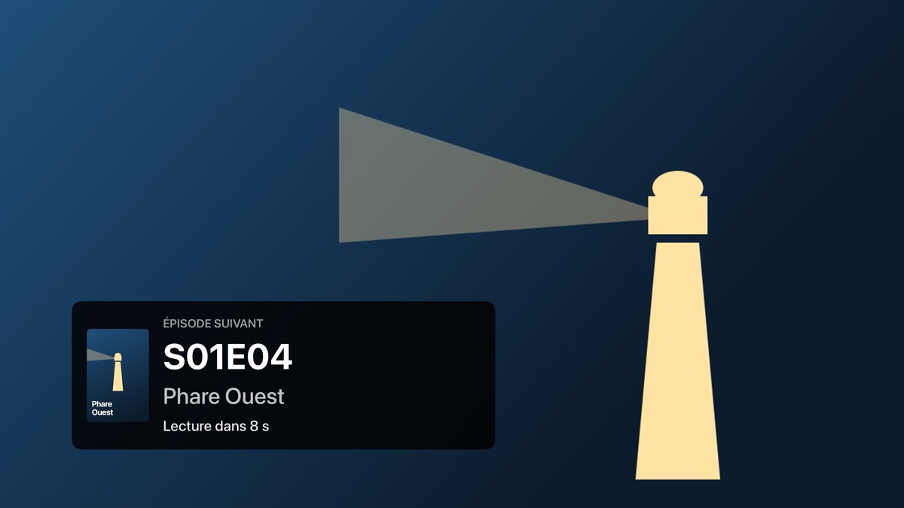
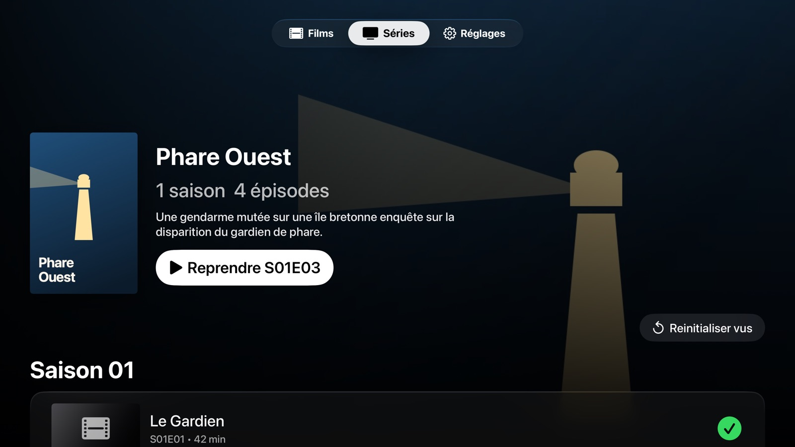
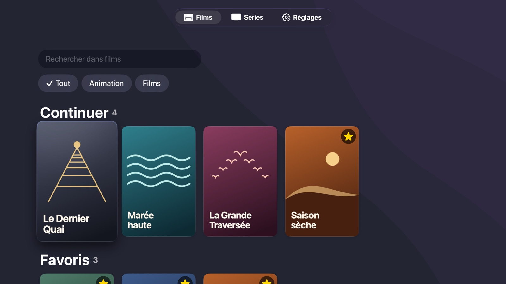
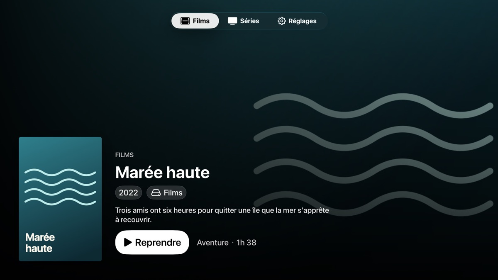
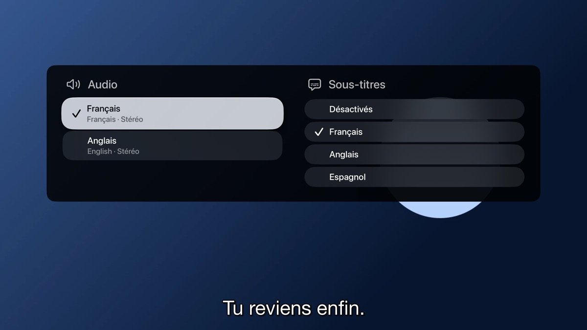
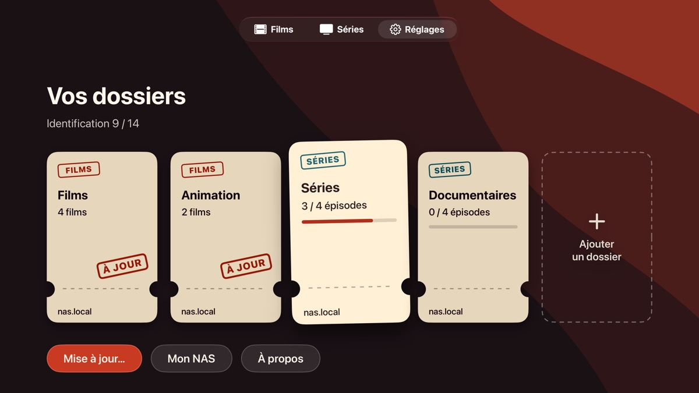
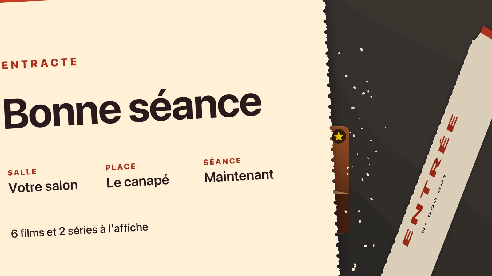

Reprenez où
vous en étiez.
Entracte retient votre progression. À la fin d’un épisode, le suivant se lance tout seul.

Un lecteur de NAS pour Apple TV
Entracte lit sur l’Apple TV les films et séries rangés sur votre NAS. Il le trouve sur le réseau, range vos fichiers, et il ne vous reste qu’à lancer la séance.
Aucun serveur à installer. Aucun compte à créer.


Rien à installer sur le NAS.
Aucun compte à créer.
Tout simplement, sur Apple TV.
TROIS ÉTAPES, PUIS LA SÉANCE.
ÉTAPE 1
Entracte le repère tout seul sur votre réseau. S’il n’apparaît pas, saisissez son adresse.
Partage SMB
ÉTAPE 2
Entracte reconnaît seul les films et les séries, même rangés en vrac.
Vos fichiers restent intacts
ÉTAPE 3
Affiches et résumés arrivent tout seuls. Vous pouvez déjà regarder pendant ce temps.
Bonne séance
À L’AFFICHE CE SOIR.
Entracte retient votre progression. À la fin d’un épisode, le suivant se lance tout seul.

Affiches et résumés en français. Une fiche mal reconnue se corrige en quelques clics.

Choisissez l’audio et les sous-titres, intégrés ou rangés à côté de la vidéo. Le MKV est pris en charge.

Ajoutez un dossier, changez son contenu, et mettez-le à jour quand de nouvelles vidéos arrivent.

ENTRE VOUS ET VOTRE NAS.
Entracte n’a pas de serveur : vos vidéos restent sur votre NAS et votre bibliothèque sur votre Apple TV. Aucun compte, aucune publicité, aucun traceur.
Pour trouver les fiches, le titre et l’année déduits de vos fichiers sont envoyés à The Movie Database.
Notre politique de confidentialité
Il vous faut une Apple TV et un NAS, ou un ordinateur, qui partage ses vidéos en SMB sur votre réseau local.
Bientôt sur l’App Store